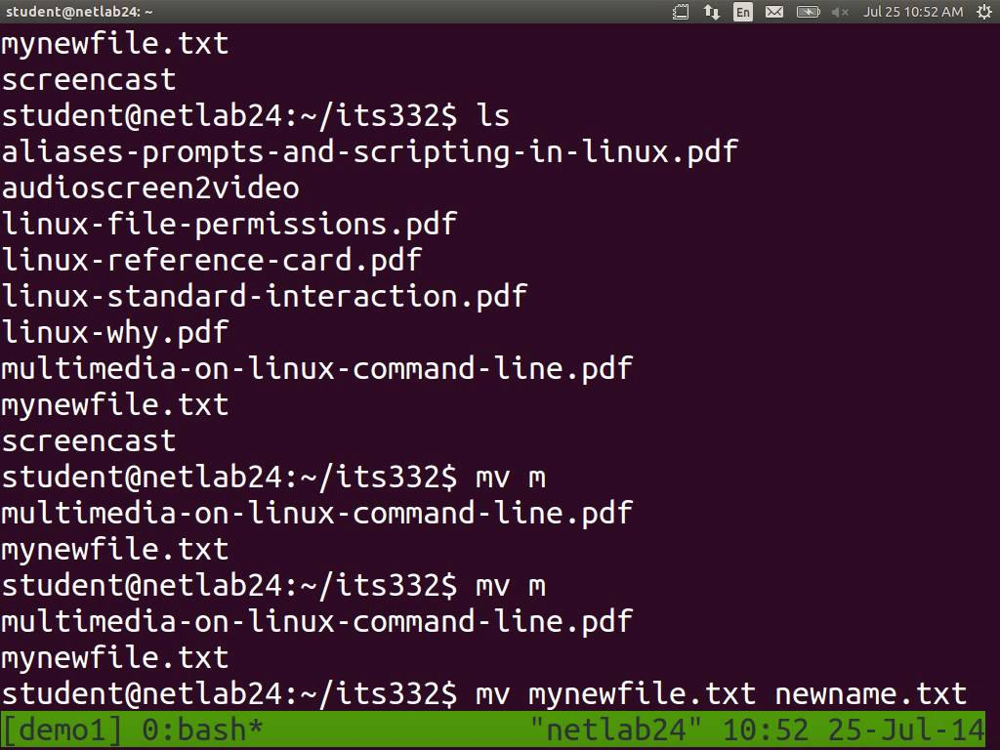

This tutorial requires you to have access to a proper command line.
Get one on Windows with Cygwin
or the newly announce Ubuntu bash for Windows.

There are 3 kinds of servers you can rent (simplified)
Managed: $$$ "all" the software you need is already installed.
Virtual server: $ only a basic operating system installed in a virtual machine, you install the rest. CPU and RAM are shared with other users, you are guaranteed a certain capacity.
Dedicated server: $$$ you are the only user on the server you rent.
Once you have rented the server you will get a root (admin) login.
$ ssh root@SERVER_IP_ADDRESSOn the server you can install software as you wish\ using your root privileges
~ mean?
~ is the abbreviation for your home folder /home/myname
local$ nano ~/ssh/configHost myserver
HostName 123.456.2.42
User rootnow you can simply login with
local$ ssh myserverAs root you have rights to change everything
without having to use a password.
Let's create a user that needs to a password when accessing critial system features.
sudoWhile being logged in we create a new user
remote$ adduser webuser
… # set password etcNow we allow the user to administer a system by adding him to the sudoers
remote$ gpasswd -a webuser sudoroot userNow that we have a user that is more restricted
we want to disable the login for the root user
remote$ nano /etc/ssh/sshd_configand change the line with PermitRootLogin to:
PermitRootLogin noRestart SSH to apply the changes!
remote$ service ssh restartNow that we have a more secure user,
exit from the remote server
remote$ exitand change your SSH config.
local$ nano ~/ssh/configHost myserver
HostName 123.456.2.42
User webuserGenerate a key file that will be automatically used when you log in via SSH (it's safer)
local$ ssh-keygen
Generating public/private rsa key pair.
Enter file in which to save the key (/home/myname/…
.ssh/id_rsa): /home/myname/.ssh/id_rsa.myserver
…You will have access to many servers, generate a keyfile for each server!
… not done yet
Use a password to protect your SSH key.
…
Enter passphrase (empty for no passphrase): ***
Enter same passphrase again: ***But does this mean I have to type this password all the time? Not exactly you will see.
First we will make it impossible to brute force the SSH access.
local$ ls -l ~/.ssh/-rw-r--r-- 1 me me 3,9K … config
-rw------- 1 me me 1,7K … id_rsa
-rw-r--r-- 1 me me 394 … id_rsa.pub
-rw------- 1 me me 1,8K … id_rsa.myserver
-rw-r--r-- 1 me me 395 … id_rsa.myserver.pub
-rw------- 1 me me 71K … known_hosts\ mean?
\ means that the command continues on the next line
local$ ssh-copy-id \
-i ~/.ssh/id_rsa.myserver.pub myserver.pub ending, this means that this is the Now that we have a secure key file we want to disable all logins with a password.
local$ ssh myserver
… # enter your password for the ssh key
… # don't allow your OS to unlock on boot-login
remote$ sudo su
… # enter your password for the webuser
remote-root$ nano /etc/ssh/sshd_configadd the following line (look first if it is already present)
PasswordAuthentication noYour OS will remember the password for the whole session (until you shut down your computer)
remote-root$ exit
remote$ exitLog out of the remote server.
You can also use ctrlD instead of typing exit
Now log in again
local$ ssh myserverNow you have 2 new passwords that you would have to remember, but don't you will just use a weak passwords or forget your password.
Instead use a password manager like KeePassX
and generate long passwords like
Fsow@/`MM#msVwk_vD~Vz_eH; M>yPQ@&3+:6Q*(>e5#0T o(`xe5,aG?{s-{8~Use one strong + long password that you will remember because you type it alot.
On Windows / OS X / iOS KeePass
On Android KeePassDroid
There are sever other variants that should work too
Now that you have come so far …
Don't trust a company like LastPass to not 'hand out' your passwords
Set up OwnCloud on your server and sync your password vault to all devices.
To add access for additional users
sudoers if necessarylocal$ can be forwared when local$ ssh remote
remote$ ssh remote2$ ssh root@SERVER_IP_ADDRESS
local$ nano ~/ssh/config
… Host myserver
… HostName 123.456.2.42
… User root
local$ ssh myserver
remote$ adduser webuser
… # set password etc
remote$ gpasswd -a webuser sudo
remote$ nano /etc/ssh/sshd_config
… PermitRootLogin no
remote$ service ssh restart
remote$ exit
local$ nano ~/ssh/config
… Host myserver
… HostName 123.456.2.42
… User webuser
local$ ssh-keygen
Generating public/private rsa key pair.
Enter file in which to save the key (/home/myname/…
.ssh/id_rsa): /home/myname/.ssh/id_rsa.myserver
Enter passphrase (empty for no passphrase): ***
Enter same passphrase again: ***
…
local$ ssh-copy-id -i ~/.ssh/id_rsa.myserver.pub myserver
local$ ssh myserver
… # enter your password for the ssh key
… # don't allow your OS to unlock on boot-login
remote$ sudo su
… # enter your password for the webuser
remote-root$ nano /etc/ssh/sshd_config
… PasswordAuthentication no
remote-root$ exit
remote$ exit
… # or use use ctrl+D instead of typing exit
local$ ssh myserver